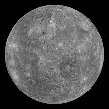
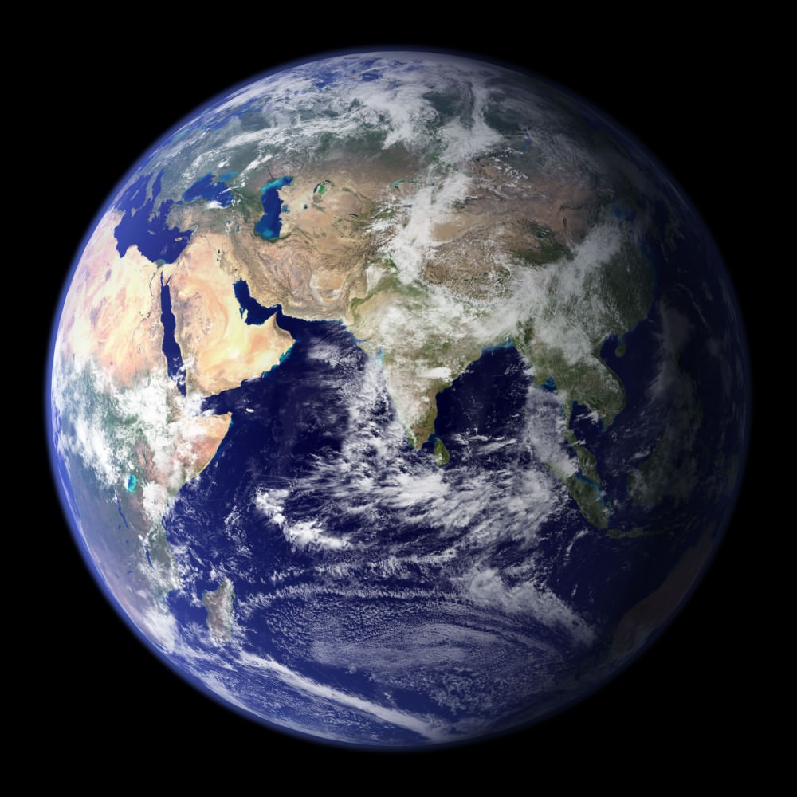
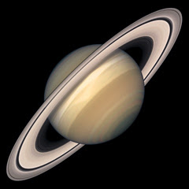
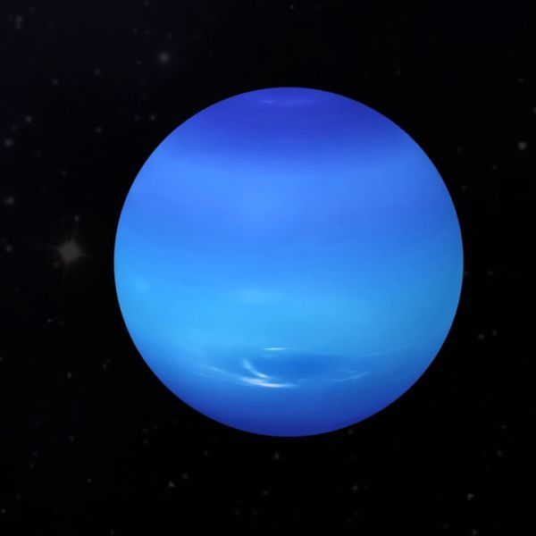
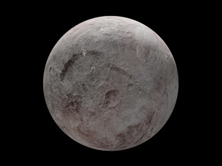
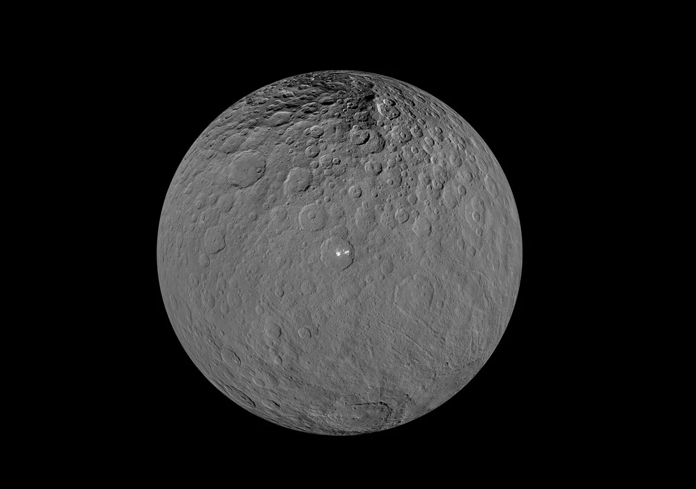
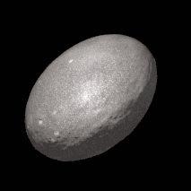
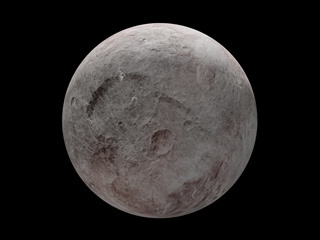
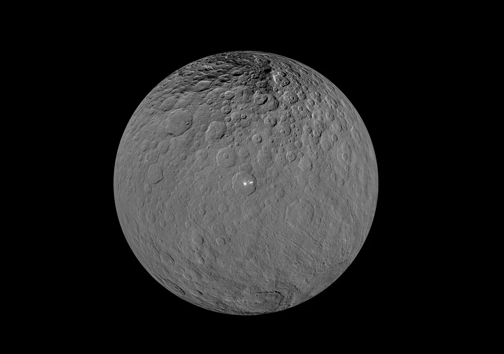
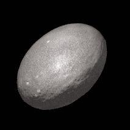

The Solar System
Mercury
Mercury is the smallest planet in our solar system and nearest to the Sun. It is only just slightly bigger than Earth's moon. From the surface of Mercury, the Sun would appear more than three times as large as it does when viewed from Earth, and the sunlight would be as much as 11 times brighter. Despite its proximity to the Sun, Mercury is not the hottest planet in our solar system. However Mercury is the fastest planet, zipping around the Sun every 88 Earth days.

Venus
Our nearest planetary neighbor, the second planet from the Sun, has a surface hot enough to melt lead. Venus is usually called earth's twin however in some ways it is more an opposite of Earth than a twin: Venus spins backward, has a day longer than its year, and lacks any semblance of seasons. It might once have been a habitable ocean world, like Earth, but that was at least a billion years ago. Asked if the surface of Venus is likely to be life-bearing today, we can give a quick answer: a hard “no”.

Earth
Earth is the third planet from the Sun and the only astronomical object known to harbor life. This is enabled by Earth being a water world, the only one in the Solar System sustaining liquid surface water.

Mars
It’s dry, rocky, and bitter cold. The fourth planet from the Sun, Mars is one of Earth's two closest planetary neighbors (Venus is the other). Mars is one of the easiest planets to spot in the night sky – it looks like a bright red point of light.
Despite being inhospitable to humans, robotic explorers – like NASA's Perseverance rover – are serving as pathfinders to eventually get humans to the surface of the Red Planet.

Jupiter
Jupiter is the fifth planet from our Sun and is, by far, the largest planet in the solar system – more than twice as massive as all the other planets combined. Jupiter's stripes and swirls are actually cold, windy clouds of ammonia and water, floating in an atmosphere of hydrogen and helium. Jupiter’s iconic Great Red Spot is a giant storm bigger than Earth that has raged for hundreds of years.

Saturn
Saturn is the sixth planet from the Sun and the second largest planet in our solar system. Adorned with a dazzling system of icy rings, Saturn is unique among the planets.
It is not the only planet to have rings, but none are as spectacular or as complex as Saturn's. Like fellow gas giant Jupiter, Saturn is a massive ball made mostly of hydrogen and helium.
The farthest planet from Earth discovered by the unaided human eye, Saturn has been known since ancient times.

Uranus
is the seventh planet from the Sun, and it's the third largest planet in our solar system – about four times wider than Earth. The diameter at its equator is 31,763 miles (51,120 kilometers).
Uranus is a very cold and windy planet. It is surrounded by faint rings, and more than two dozen small moons as it rotates at a nearly 90-degree angle from the plane of its orbit. This unique tilt makes Uranus appear to spin on its side. The atmosphere is mostly hydrogen and helium, but also includes large amounts of water, ammonia and methane. Only one spacecraft has explored the ice giant up close, NASA's Voyager 2.

Neptune
Dark, cold and whipped by supersonic winds, giant Neptune is the eighth and most distant major planet orbiting our Sun. More than 30 times as far from the Sun as Earth, Neptune is not visible to the naked eye. In 2011, Neptune completed its first 165-year orbit since its discovery.

Dwarf Planets
Pluto and other dwarf planets are a lot like regular planets. So what’s the big difference? The International Astronomical Union (IAU), a world organization of astronomers, came up with the definition of a planet in 2006. According to the IAU, a planet must do three things:
- Orbit its host star (In our solar system that’s the Sun)
- Be mostly round
- Be big enough that its gravity cleared away any other objects of similar size near its orbit around the Sun
Most Dwarf planets like Pluto were defined as objects that orbit the Sun, and are nearly round, but have not been able to clear their orbit of debris.
 






NASA
Wikipedia